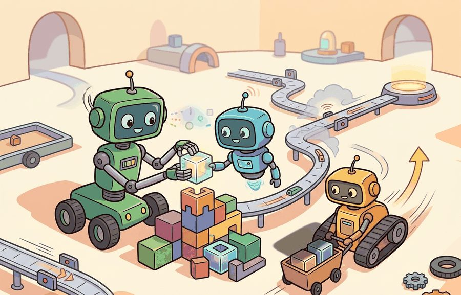

Section 49.2: Cooperation, competition, communication
A message that never changes an action is just a robot group chat with better timestamps.
A Robot Group Chat

Figure 49.2A: The three interaction regimes differ only in two design knobs, reward alignment and message flow, yet those knobs decide whether agents coordinate or deadlock (each agent waits on a resource or signal the other is also waiting on, so neither ever proceeds). Shared rewards plus broadcast observations make a cooperative team; opposing rewards make a competitive pair; partial reward overlap plus selective message passing makes a mixed team. Read the figure as a map from those two knobs to the resulting behavior, not as three separate pictures.
The ideas here are extended in section 49.3, which applies fleet-level coordination to real deployment constraints, and in section 49.4, which covers learned-communication architectures that replace hand-crafted message protocols with end-to-end trained channels. The reward-alignment foundations assumed throughout this section are introduced in section 2.4, and the trust-region update that underpins convergence guarantees for cooperative agents is developed in section 15.4.
Big Picture
Two warehouse robots converge on the same shelf at the same second. One has the item; the other has the charging slot the first robot needs in six minutes. Whether they resolve this in 40 milliseconds or grind to a deadlock depends entirely on three design choices: are their rewards aligned, what can each observe about the other, and does a message arrive in time to change the next action? As embodied fleets scale from pairs to hundreds of units, these choices become the dominant factor in system reliability. Here you will map the three interaction regimes, trace the failure modes each introduces, and apply a concrete decision rule for when communication earns its latency cost.
These three regimes stop being abstractions the moment they hit a physical interface. A cooperative pair of Kiva (Amazon Robotics) warehouse drives shares a SLAM map (simultaneous localization and mapping, where a robot builds a map of an unknown space while tracking its own pose within it) and a ROS 2 reservation topic (ROS 2 is the Robot Operating System, a middleware for passing typed messages between robot processes), and it resolves a shelf conflict in tens of milliseconds. A competitive pair in a DARPA Subterranean Challenge run each maximizes its own coverage score, and one can strand a teammate in an unmapped corridor. A mixed team of a Spot (Boston Dynamics) quadruped and a fixed manipulator passes intent over a single bounded message channel to hand off an inspection task. The design question is always the same: which observations the robots share over the LiDAR and radio budget, which rewards align, and which messages arrive in time to change the next actuator command.
Figure 49.2A lays out the three interaction regimes this section examines: a cooperative team sharing a reward signal, a competitive pair optimizing opposing rewards, and a mixed team using message passing to coordinate sub-tasks. These regimes presuppose the leap from a single agent to many, where the environment itself becomes non-stationary (its effective transition rule keeps shifting because other agents are simultaneously updating their own policies, so a strategy that worked last episode can stop working even though nothing about the physical world changed) because other learners are changing their policies too. The key question is practical: Which variables are shared, which rewards are aligned, and which messages are worth their latency cost?
Action Is The Test
A representation earns its place when it changes the measurable action interface. In cooperation, competition, communication, the reader should keep asking which decision becomes easier, safer, or more reliable.
Theory
For Cooperation, competition, communication, the practical design rule is to make the interface inspectable before optimization begins: inputs, outputs, units, latency, bounds, and failure labels should all be visible in the saved artifact.
Mechanism
The mechanism in Cooperation, competition, communication is the contract between representation and action. Name what enters the module, what leaves it, which assumptions make that transformation valid, and which log would reveal a bad handoff.
Worked Example
To see how that interface contract plays out in practice, ground it in the smallest team that still exhibits all three regimes.
Consider two delivery robots and one charging dock. Cooperation schedules charging before failure; competition can starve a low-battery robot; communication helps only if messages change the next action.
Consider a specific case: in the Amazon Scout deployment, each sidewalk robot broadcasts its battery percentage and estimated time to dock every 500 ms over a shared topic. A fleet coordinator running on an edge server receives these messages and issues pre-emptive return commands when any unit falls below 20%. Without that message, a robot completing its last delivery would drain to zero 80 m from the dock. With it, the coordinator redirects the robot 4 deliveries early, accepting a 6-minute delay in exchange for guaranteed availability. That single message, arriving at the right moment, changes the action from "continue delivery" to "return to dock," which is precisely the test for whether communication earns its latency cost.
The competitive regime works by the same test with the opposite incentive. Give each of the two delivery robots its own reward for finishing first rather than a shared team reward, and a message revealing "I am low on battery" stops being useful information to broadcast: a self-interested robot that discloses its weakness invites the other to take the shorter route to the dock first. In practice, competitive agents therefore either suppress informative messages or send strategically misleading ones, and the design question shifts from "which message changes the action" to "which message changes the action in the sender's favor." A concrete case is two warehouse robots racing for the same charging slot under individual completion-time rewards: the one that reports its true battery level first can be exploited by a rival that reroutes to block it, so equilibrium behavior under this reward structure is silence or bluffing, not honest broadcast.
Library Shortcut
The hand-built fragment is roughly 12 lines and cannot model message timing. Use PettingZoo parallel environments for simultaneous moves and ROS 2 topics for real robot communication; the tools handle action dictionaries, agent IDs, and message transport while the small version keeps the reward logic inspectable.
Practical Recipe
Turning that single well-timed Amazon Scout message into a general design discipline means deciding, step by step, which observations and messages to admit before you ever train a policy.
Fix the physical observation budget first: each robot can sense teammates only within its onboard LiDAR range (typically 10-30 m for units like the Velodyne VLP-16) and over a radio channel with a measurable bandwidth ceiling. Write the observation schema with these hard limits before any model choice.
Build a zero-communication baseline in MuJoCo or Isaac Lab (the successor to Isaac Gym, as of 2023) and record the collision rate, deadlock frequency, and task-completion time. These three numbers are the floor every communication scheme must beat.
Add a minimal intent message (one integer encoding the robot's next waypoint goal) over a simulated ROS 2 topic before introducing full state broadcasts. The marginal gain of that single integer over silence reveals the coordination bottleneck without the bandwidth cost of broadcasting joint angles, velocity estimates, and sensor readings.
Run a sim-to-real stress test by injecting 50 ms of added latency and 5% packet drop, matching the conditions reported in real outdoor deployments (Clearpath Husky fleets on construction sites commonly see these figures over Wi-Fi). If the team score degrades by more than 15%, the coordination policy is latency-brittle and must be redesigned before hardware trials.
Log message content, local odometry at send time, chosen action, and the counterfactual action the robot would have taken without the message. Any message that does not change the action in at least 30% of logged steps is a candidate for removal, reducing channel load without harming task performance.
Common Failure Mode
The common mistake in Cooperation, competition, communication is to celebrate the component score before checking the closed-loop handoff. The failure usually appears at the boundary: stale state, wrong frame, delayed action, saturated actuator, or metric that ignores the real task cost.
Common Misconception
A shared reward signal is not enough to produce cooperative behavior. Shared rewards tell agents what to achieve together, but physical constraints determine whether they can actually coordinate. Two robots with identical reward functions still deadlock at a doorway if neither can observe the other's position. They still collide if a message about the other's intent arrives 200 ms too late to change the current action. Reward alignment is a necessary condition for cooperation, not a sufficient one. The real bottleneck is almost always observation range, communication latency, or action-loop timing, not the reward structure.
Think of two line cooks who both want the dish to taste good: they share the goal completely, yet they still burn the sauce if one reaches for the same pan without looking up, or if the other shouts "behind you" a second after the collision already happened. Wanting the same outcome is the starting condition, not the solution. The actual coordination happens through glances, calls, and timing, all of which can fail independently of how much both cooks care about the result. Reward alignment sets the destination; observation range and message timing are the road.
Practical Example
A useful communication study logs message content, message time, local observation, chosen action, and counterfactual no-message action. If the action would not change, the message is ceremony rather than coordination.
Research Frontier
Active work studies learned communication, language as a coordination medium, opponent modeling, and mixed cooperative-competitive benchmarks. Vendor or demo claims should be checked against partner diversity and communication ablations.
Heterogeneous-Agent Proximal Policy Optimisation (HAPPO) (Kuba et al., ICLR 2022) provides a principled trust-region update for heterogeneous cooperative agents, proving that sequential per-agent updates preserve a monotonic improvement guarantee for the joint policy. This result is relevant to communication because it establishes that improving one agent's policy given its partners' fixed communication behavior is a safe update step, which is the implicit assumption behind many learned-communication architectures that otherwise lack convergence guarantees.
If a guaranteed-safe policy update still requires every agent to share the same message vocabulary, what happens when a new robot type joins the fleet mid-deployment and speaks a different protocol?
Direction 1: Language-grounded multi-agent coordination (2024-2026). Rather than training emergent message codes from scratch, recent work conditions coordination on shared natural-language instructions issued by a central planner. RoCo (Mandi et al., RSS 2024, Carnegie Mellon) demonstrates that large language model-generated sub-task assignments allow heterogeneous robot teams to complete long-horizon rearrangement tasks with no policy re-training when a new teammate joins, because the language interface is partner-agnostic. The open research question is how much coordination quality degrades when the LLM planner must operate under real-time latency budgets (sub-100 ms) on resource-constrained edge hardware.
Direction 2: Decentralized communication with learned bandwidth allocation (2024-2026). Instead of fixing which agents communicate with which, agents now learn a sparse attention mask over their teammate pool and transmit only to the subset that most changes their own value estimate. MAGIC (Niu et al., 2024, Tsinghua University and Peking University) shows that learned graph-sparse communication matches or exceeds full-broadcast performance on StarCraft II micro-management tasks while cutting transmitted bits by over 60%. Extending this to physical robot fleets where channel quality itself varies over time remains an open problem.
Direction 3: Adversarial robustness in mixed cooperative-competitive settings (2025-2026). As multi-agent systems move to open environments, some agents may behave adversarially or simply be out-of-distribution partners. Work from the MIT CSAIL group on robust multi-agent reinforcement learning (MARL) (2025) studies how a cooperative team's communication protocol can be hardened against a small fraction of agents that send misleading messages, showing that learned trust weights derived from action consistency checks substantially reduce adversarial disruption. Scaling these defenses to hundreds of agents without a central verifier is an open problem well-suited to a PhD dissertation.
Open problem for PhD researchers. All three directions above assume a fixed set of agents that is known at training time. A tractable open problem is designing a communication protocol that generalizes to an unknown number of previously unseen robot types at deployment, without any fine-tuning, while preserving the bandwidth guarantees measured in simulation. The challenge is that both the message vocabulary and the trust model must adapt online from a handful of observed interactions before coordination quality degrades to the no-communication baseline.
Self Check
Can you name the observation, state estimate, action, success metric, and most likely failure mode for cooperation, competition, communication? If not, the system boundary is still too vague.
Cooperation, competition, and communication earn their place only under a closed-loop contract that names the participants, observations, action authority, timing budget, logging artifact, and recovery rule. Without it, a system looks capable in a notebook yet fails the first time a partner delays, a person corrects it, or the scene changes. A robot that coordinates perfectly in theory but deadlocks on the first dropped packet has not solved coordination; it has only rehearsed it.
For Cooperation, competition, communication, separate the conceptual claim, the systems claim, and the evidence claim. A plausible mechanism, a clean interface, and a closed-loop result are different claims; the section should keep their evidence separate.
Practical Tool Choices For This Section
Tool or Library
Role in the Topic
Builder Advice
PettingZoo
Cooperation, competition, communication
Standardize multi-agent environment interfaces and compare turn-based with parallel interaction.
Gymnasium
Cooperation, competition, communication
Keep single-agent baselines available before adding teammates or opponents.
ROS 2
Cooperation, competition, communication
Move team messages, robot state, and safety events through typed topics and services.
MuJoCo
Cooperation, competition, communication
Prototype contact-rich robot interactions before running real hardware.
LeRobot
Cooperation, competition, communication
Reuse robot datasets and policies when team behavior depends on demonstrations.
For Cooperation, competition, communication, the baseline and maintained-tool version should produce the same artifact schema and run on one task panel. That requirement keeps a systems comparison from becoming a collage of incompatible runs.
Write a one-paragraph task contract with observation, action, success, and failure fields.
Start with the smallest simulator, dataset, or wrapper that exposes the task contract faithfully.
Run one deterministic smoke test and one perturbation test before scaling.
Save a single result artifact containing configuration, seed, metrics, videos or traces, and failure labels.
Compare methods only when one script evaluates them on the same task panel.
When Cooperation, competition, communication fails, avoid labeling the whole method as weak. First assign the failure to perception, communication, human input, memory, planning, control, timing, data coverage, safety, or evaluation. Then rerun one controlled perturbation that isolates the suspected cause. This pattern turns a disappointing rollout into a reusable diagnostic asset.
Agent Checklist Applied
The 42-agent production pass treats cooperation, competition, communication as a buildable system, not a definition. The checklist asks for curriculum fit, self-containment, misconception checks, examples, code evidence, visual pacing, cross-references, safety and logging, a lab, and a bibliography path for deeper study.
Cross-Reference Trail
For Cooperation, competition, communication, connect the agent-environment boundary, Gymnasium or PettingZoo interface, RL objective, hierarchy, and evaluation artifact through one multi-agent interaction log.
Misconception Check
A common misconception is that more communication is always better. The diagnostic question is: can the same team score be reached with fewer bits, fewer messages, or delayed communication?
Mini Lab
Build a tiny cleanup task where agents can either broadcast every observation or send only one selected intent. Measure success, collisions, and messages per episode.
Memory Hook
A message that never changes an action is just a robot group chat with better timestamps.
Technical Core
Cooperation, competition, communication needs a topic-native core: variables, equations or system contracts, an algorithmic procedure, an expected output, and a failure diagnosis. Figure 49.2.T summarizes the chain this section must preserve when moving from a teaching example to a real embodied system.
Figure 49.2.T: The technical core for Cooperation, competition, communication connects assumptions, model, algorithm, evidence, and failure analysis.
Communication is worthwhile only when the message changes a joint action enough to justify its cost. Cooperation, competition, and communication are therefore tied by information economics: agents trade bandwidth, delay, and observability against the value of coordinated behavior or strategic concealment.
When to Set Lambda High vs. Low
The penalty weight $\lambda$ controls how expensive each message is relative to task reward. Set $\lambda$ low (near 0) when the channel is cheap and reliable, such as agents on a shared LAN with sub-millisecond latency: the cost of over-communicating is negligible and agents can afford to broadcast frequently. Set $\lambda$ high when bandwidth is scarce or contested, such as a robot swarm sharing a narrow radio channel with safety-critical traffic: only messages that change a high-value action survive the penalty. In practice, tune $\lambda$ by sweeping it from 0 upward and watching when task performance first drops; the elbow of that curve (the point where a plot of performance against $\lambda$ bends sharply downward, after being nearly flat) marks the channel cost the system can absorb without coordination loss.
Value-of-message audit
Define the game outcome with zero messages, bounded messages, and unrestricted broadcast.
Measure the marginal improvement in return per transmitted bit or per message slot.
Stress the system with delayed, dropped, and adversarially corrupted messages.
Separate cooperative gains from exploitative gains by reporting both team and per-agent utility.
Checkpoint
So far: the utility function $u_i$ prices every message against a bandwidth penalty $\lambda$, the elbow-sweep method picks that penalty from data instead of guesswork, and the value-of-message audit turns "does communication help" into a four-step measurement procedure comparing zero, bounded, and unrestricted messaging under both clean and stressed channel conditions.
Communication Design Questions
Choice
What It Buys
What It Risks
Broadcast state
High observability, simple debugging.
Bandwidth blowup and stale data.
Intent-only messages
Small message budget, faster arbitration.
Ambiguity under changing goals.
Learned emergent code
Compact signaling for repetitive tasks.
Opaque semantics and poor partner transfer.
No communication
Strong robustness and deployment simplicity.
Missed coordination opportunities and local deadlocks.
# Compare team gain against communication cost.results=[{"policy":"silent","team_return":78,"messages":0},{"policy":"intent_bit","team_return":96,"messages":12},{"policy":"full_broadcast","team_return":99,"messages":140},]baseline=results[0]["team_return"]forrowinresults[1:]:gain=row["team_return"]-baselinegain_per_msg=round(gain/row["messages"],3)print(row["policy"],"gain",gain,"gain_per_message",gain_per_msg)
intent_bit gain 18 gain_per_message 1.5
full_broadcast gain 21 gain_per_message 0.15
Code Fragment 49.2.T: computing gain-per-message for the silent, intent-bit, and full-broadcast policies, showing that the best communication policy is often the one with the best return-per-message ratio, not the largest raw score.
This trace says the extra 128 broadcasts buy only three additional reward points, illustrating what practitioners call the communication bandwidth tax: each additional message must justify its channel cost through measurable action improvement. That ratio is often a poor systems trade on real robots where messages contend with state estimation, safety traffic, and network jitter. The compact intent signal is therefore the more credible embodiment choice.
The Bandwidth Tax On Real Hardware
Why the bandwidth tax matters for embodied robots. A robot's radio channel carries more than coordination messages: safety stop signals, sensor streams, and operator overrides all share the same medium. When coordination traffic grows, it crowds out safety-critical packets, raising their queuing delay. A 50 ms delay in a stop signal is harmless in a simulation grid but can mean a collision on a warehouse floor moving at 1.5 m/s. Physical bandwidth is also bounded by hardware: a Velodyne VLP-16 already saturates a standard UDP pipe with point-cloud data, leaving little headroom for frequent state broadcasts without dedicated channel allocation.
How the contention mechanism works. Each robot shares a wireless medium using a protocol such as 802.11 CSMA/CA, where CSMA/CA is Carrier Sense Multiple Access with Collision Avoidance, the Wi-Fi rule that makes a sender listen for a quiet channel and wait a random back-off before transmitting. That protocol forces senders to back off and retry when they detect simultaneous transmissions. As agent count or message rate grows, the collision probability typically rises faster than linearly, because every pair of simultaneous senders is a potential collision and the number of pairs grows with the square of the agent count; retransmission delay climbs with it. The net effect is that adding a tenth robot does not add one tenth more load: it adds contention that slows every other robot's messages. With 2 robots broadcasting full state, the code fragment above measures 140 messages per episode. If per-robot message count stayed fixed while pairwise contention scaled with the number of agent pairs, a 10-robot fleet running the same full-broadcast policy could plausibly generate on the order of several thousand messages per episode, enough in practice to crowd safety-critical stop signals off the shared channel; the exact multiplier depends on the specific MAC protocol and traffic pattern and should be measured on the target hardware rather than assumed. Designers contain this by sending only the intent integer (one byte) rather than the full state vector (hundreds of bytes). Each transmission then stays short enough that collisions remain rare and safety traffic keeps its priority slot.
When using PettingZoo's parallel_env, every agent must submit its action in the same env.step(actions) dictionary call; calling step with a partial dictionary causes the missing agents to receive a stale observation from the previous timestep, which silently inflates your measured gain-per-message ratio because the "silent" baseline is no longer truly silent. Before sweeping the lambda penalty, confirm that sorted(actions.keys()) == sorted(env.agents) at every step; PettingZoo does not raise an error on a partial dictionary, so this check must be explicit in your training loop.
Failure Mode To Test
A communication scheme fails when it wins only under perfect synchronization. Always rerun the task with bounded bandwidth, clock skew, and packet loss, then check whether the same coordination policy still chooses sensible actions.
Project Ideas
Beginner (weekend): Two-robot dock-arbitration in PettingZoo. Build a PettingZoo parallel environment with two Gymnasium-compatible agents and one shared charging dock; implement silent, intent-bit, and broadcast communication policies and measure collisions and dock-wait time per episode. The key challenge is confirming that the intent message actually changes the chosen action rather than arriving after the decision is already committed.
Intermediate (1-2 weeks): Communication-latency stress test in MuJoCo. Simulate a two-robot warehouse team in MuJoCo where robots negotiate right-of-way at a narrow corridor by exchanging ROS2 topics; sweep added latency from 0 ms to 200 ms and packet-drop rate from 0% to 20%, and record task-completion time and deadlock frequency at each setting. The key challenge is wiring a ROS2 bridge to the MuJoCo step loop so that injected latency reflects real network timing rather than deterministic simulation order.
Intermediate (1-2 weeks): Emergent intent coding with LeRobot demonstrations. Collect a small dataset of two-robot handoff demonstrations using LeRobot, then train one agent to predict a compact one-integer intent signal from its own observation and measure how often that signal changes its partner's action compared to a no-communication baseline run in Isaac Lab. The key challenge is designing the intent vocabulary to be small enough for the bandwidth budget yet expressive enough to resolve the most common coordination conflicts in the demonstration data.
Step-Through: Value-of-message audit
Trace the audit with the concrete numbers from Code Fragment 49.2.T. Start with the silent baseline: team_return = 78, messages = 0. Step 1, the intent_bit policy returns 96 over 12 messages, so the marginal gain is 96 - 78 = 18 and the gain-per-message is 18 / 12 = 1.5 reward points per message. Step 2, the full_broadcast policy returns 99 over 140 messages, so the gain is 99 - 78 = 21 and the gain-per-message is 21 / 140 = 0.15. Step 3, compare the two ratios: intent_bit delivers 1.5 / 0.15 = 10 times more value per transmitted message than full broadcast, even though full broadcast wins on raw score by 3 points. Step 4, separate the verdict: the extra 128 broadcasts (140 - 12) buy only 3 extra reward points, so on a bandwidth-constrained radio the intent_bit policy is the correct choice. The audit converts a tempting "higher score wins" instinct into a defensible per-bit trade.
Real-World Application: warehouse robot fleets
Amazon Robotics (formerly Kiva Systems) coordinates hundreds of drive units on a single warehouse floor by sharing reserved-cell tokens over a central traffic-management service rather than broadcasting full state from every robot. Each drive requests a short reservation for the next floor cell along its path, and the coordinator grants or defers it, which resolves shelf and intersection conflicts with a handful of small intent-style messages instead of continuous position streams. This is the bandwidth tax of this section made operational: minimal messages that change the next move, scaled to a fleet too large for full broadcast.
Key Takeaway
Communication is valuable when it changes the joint action under a measurable cost.
Exercise 49.2.1
Design a method-matched experiment for Cooperation, competition, communication. Specify the environment, observation schema, action interface, metric, and one perturbation that targets the section's core assumption.
Section References
Terry, J. K. et al. PettingZoo: Gym for Multi-Agent Reinforcement Learning. NeurIPS Datasets and Benchmarks, 2021.
Use for maintained multi-agent environment interfaces and reproducible API-level examples.
Lowe, R. et al. Multi-Agent Actor-Critic for Mixed Cooperative-Competitive Environments. NeurIPS, 2017.
Use for centralized-training, decentralized-execution baselines and communication or coordination failure analysis.